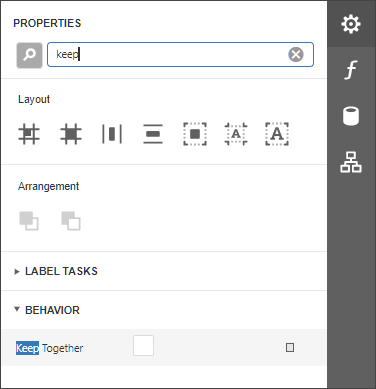

Keep Content Together
You can choose whether a control's content can be split across several pages using its Keep Together property.

| Keep Together = No | Keep Together = Yes |
|---|---|
Enabling this property for a single control makes the same band's controls behave like this option is enabled.
Use the band's Keep Together property to enable this feature for all controls within a specific band.
In a master-detail report, you can print the detail band on the same page as the detail report band using the detail band's Keep Together with Detail Reports property.